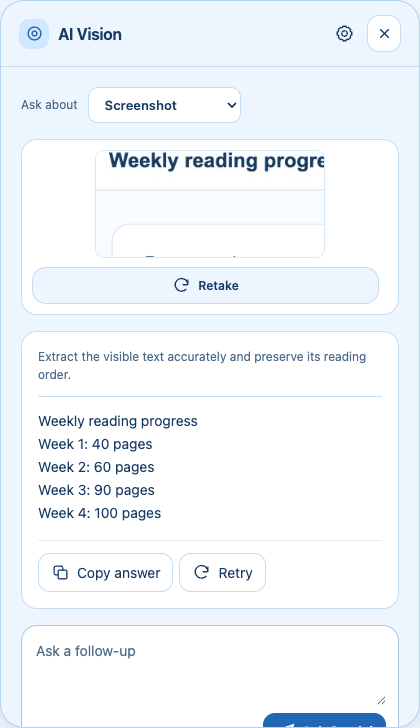

Copy text from screenshots in Chrome
By AI Vision project · Updated
Text in a chart, image, error dialog, or announcement is visible but often cannot be selected. AI Vision lets you select that area, ask Gemini to extract the words, and copy the answer back into your notes.

1. Set up AI Vision
- Create or find a Gemini API key in Google AI Studio.
- Open AI Vision Settings, paste the key, and choose Save & check key. Saved means the key is stored in Chrome; Connected means the model-list check reached Gemini successfully.
- Return to a supported webpage. Chrome internal pages, the Chrome Web Store, and other restricted pages cannot be captured by this workflow.
2. Extract and copy the text
- Open AI Vision and leave Ask about set to Screenshot.
- Choose Select an area, then drag around the complete text. Include headings, labels, punctuation, and table columns when they matter.
- After the preview appears, open More actions and choose Extract text. In the default One-tap Explain setting, this is the shortcut that asks Gemini for the transcription.
- Review the answer against the screenshot. Choose Copy answer to place the result on your clipboard, then paste it into a document, search box, or message.
- Use the follow-up field if a line needs correction: ask Gemini to re-read one region, preserve the original line breaks, or mark an unreadable word instead of guessing.
For repeated use, Settings also offers Explain automatically. That preference sends a new Screenshot capture to Gemini immediately, but Extract text remains an explicit shortcut under More actions.
3. Worked examples
Error message
Capture the complete error, including its code and the first line of surrounding context. Ask:
“Transcribe this error exactly. Keep punctuation and line breaks. Separate the error code from the explanatory text, and write [unclear] instead of guessing.”
Illustrative transcription:
Upload failed (E-204)
The selected file is larger than 25 MB.
Try a smaller file and upload again.Announcement image
Include the title, date, location, and any small-print condition. Ask:
“Extract the announcement in reading order. Preserve the date, time, names, and punctuation. Put each bullet on its own line.”
Illustrative transcription:
Quiet study hour
Tuesdays and Thursdays · 4–5 pm
Six-week trial beginning September 15
The ground floor remains open for conversation.Small table
Drag around the table with its column headings. Ask Gemini to keep the row and column relationship visible:
“Transcribe this table as Markdown. Keep the header names, preserve units, and do not fill in blank cells.”
| Plan | Storage | Price |
|---|---|---|
| Starter | 5 GB | $4/month |
| Team | 50 GB | $12/month |
Tables are easy to misread when the selection misses a header or a row. Check every number before you use a copied transcription.
Prompts that protect accuracy
- Reading order: “Read from top to bottom and left to right. Keep headings before the paragraphs they introduce.”
- Exact copy: “Preserve capitalization, punctuation, symbols, and visible spelling. Do not improve the wording.”
- Uncertainty: “Mark letters or numbers you cannot read as [unclear]. List the uncertain regions after the transcription.”
- Structured output: “Return only the text in a code block,” or “Return a Markdown table with the original headers.”
If extraction does not work
- Blurry text: zoom the webpage before selecting, choose a tighter area, and include enough surrounding context for the reading order.
- A line is missing: retake the screenshot with the full line and its heading. A narrow crop can make Gemini lose the relationship between labels and values.
- Selection is cancelled: press Escape or Cancel to return to the earlier capture. A new successful capture starts a fresh conversation.
- Restricted page: move to a normal HTTP or HTTPS webpage. AI Vision cannot capture Chrome internal pages or the Chrome Web Store.
- Invalid key or quota error: open Settings, keep the saved key, and use the feedback to check Google AI Studio’s project, model access, and limits. See the key troubleshooting guide.
Gemini can misread small type, handwriting, low contrast, unusual fonts, and tightly packed tables. Treat the output as a draft and compare important names, numbers, dates, and codes with the screenshot.
Keep the workflow close
Use the screenshot explanation guide when you need meaning rather than a transcription, summarize a webpage when the content is selectable, or compare Chrome tabs when facts are spread across sources. Your screenshot and question go directly to Google’s Gemini API; review the privacy notice before sharing sensitive content.